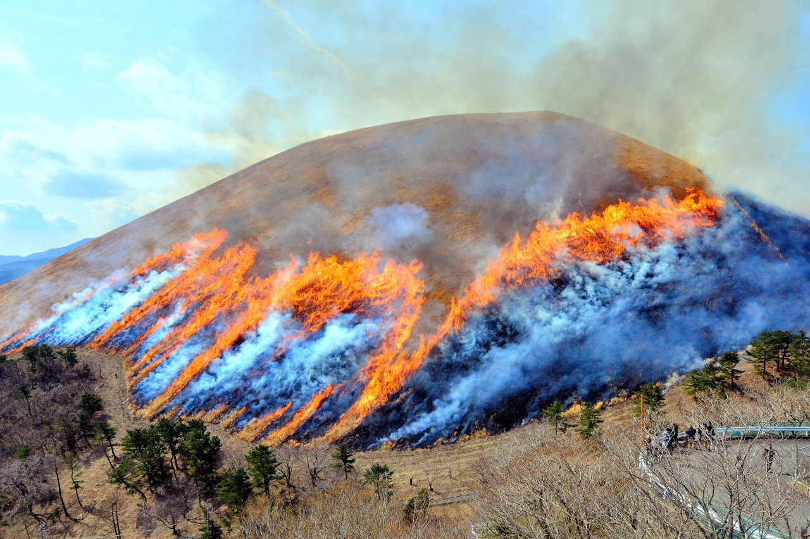
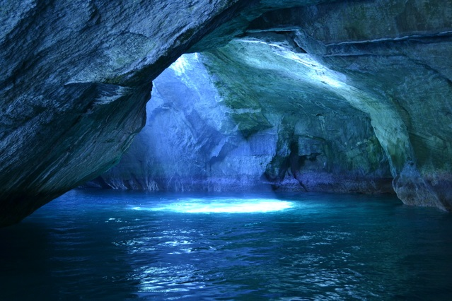
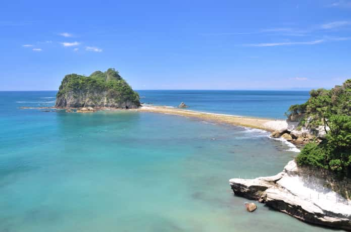
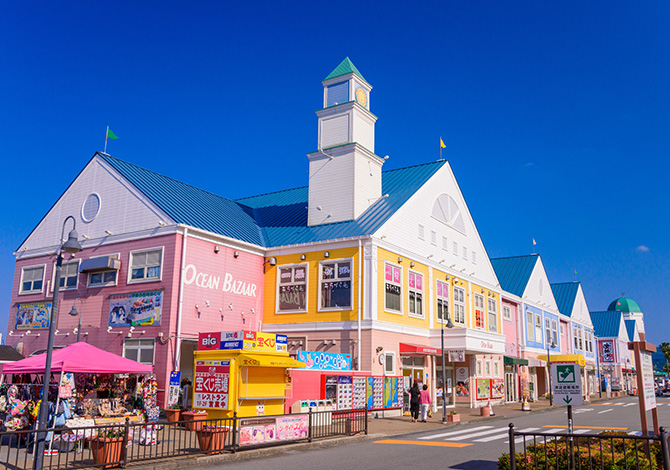
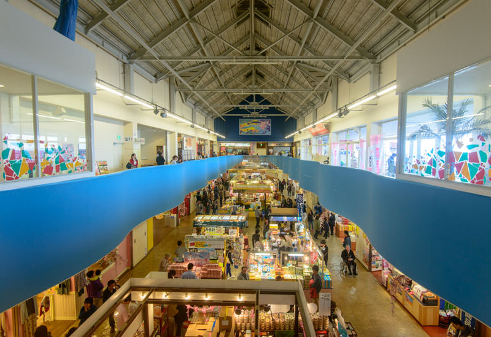
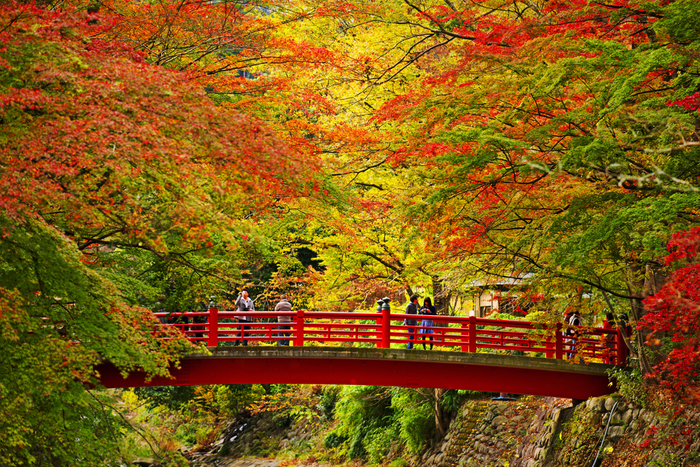
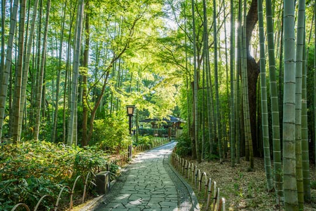
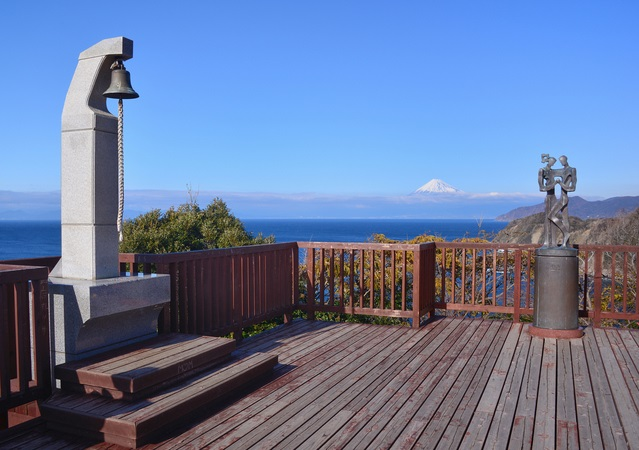
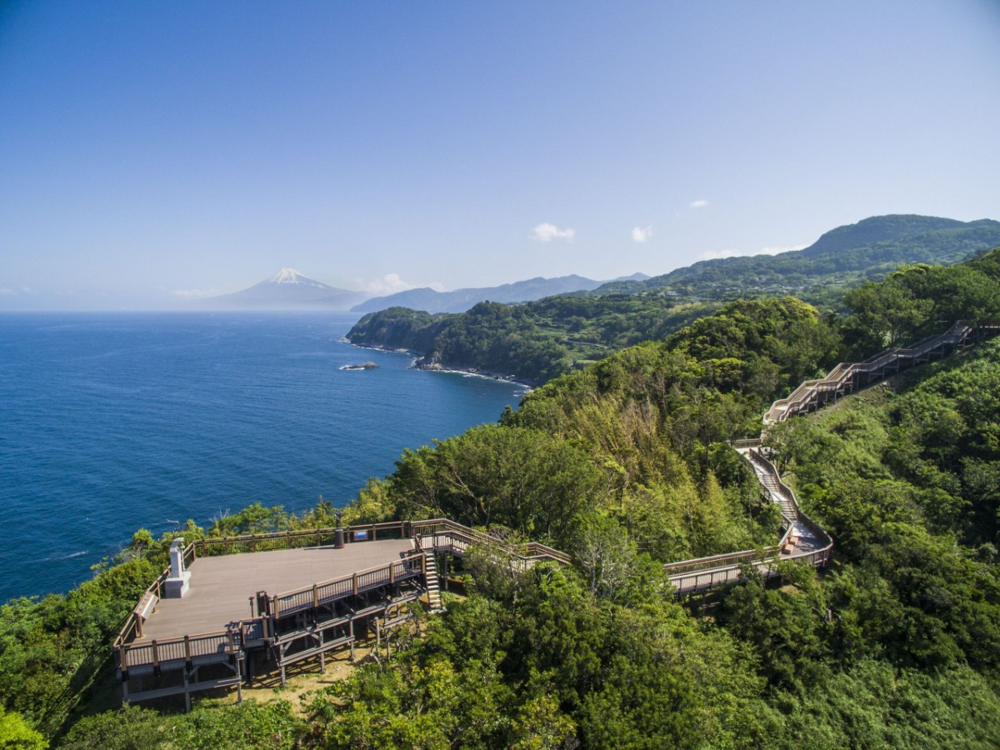

Discover Beautiful Izu
伊豆には、自然が生み出した絶景や、 歴史ある街並みなど魅力的な観光地が数多くあります。 心に残る景色を巡る旅へ出かけましょう。



大室山
標高約580mの美しい山で、 リフトに乗って山頂まで行くことができます。 山頂ではお鉢巡りを楽しみながら、 富士山や相模湾、 伊豆諸島まで見渡せる360度の絶景が広がります。
AREA
伊東市
BEST SEASON
春・秋
POINT
絶景・リフト
ACCESS
伊東駅から車約20分


堂ヶ島（遊覧船）
西伊豆を代表する景勝地。 遊覧船に乗ると、洞窟や奇岩の間を進み、 天然記念物にも指定されている美しい海岸美を 間近で楽しむことができます。
AREA
西伊豆町
BEST SEASON
春〜秋
POINT
遊覧船・洞窟探検
ACCESS
堂ヶ島バス停から徒歩約3分


伊東マリンタウン
海沿いに建つカラフルな道の駅。 レストランやカフェ、お土産ショップ、 温泉施設まで揃っており、 ドライブ途中の立ち寄りスポットとして人気です。
AREA
伊東市
BEST SEASON
一年中
POINT
グルメ・温泉・買い物
ACCESS
伊東駅から車約5分


修善寺
伊豆最古の温泉地として知られる修善寺。 竹林の小径や歴史ある寺院、 石畳の街並みが広がり、 四季折々の風景を楽しみながら散策できます。
AREA
伊豆市
BEST SEASON
春・秋
POINT
温泉・街歩き
ACCESS
修善寺駅からバス約10分


恋人岬
駿河湾と富士山を望む、 伊豆を代表する絶景スポット。 「ラブコールベル」は恋愛成就の パワースポットとしても人気があり、 美しい夕日も楽しめます。
AREA
伊豆市
BEST SEASON
秋・冬（夕景）
POINT
絶景・夕日・恋愛スポット
ACCESS
土肥港から車約15分